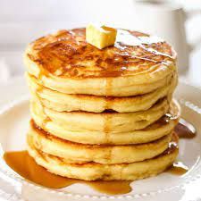
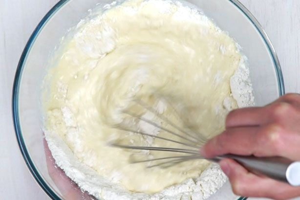
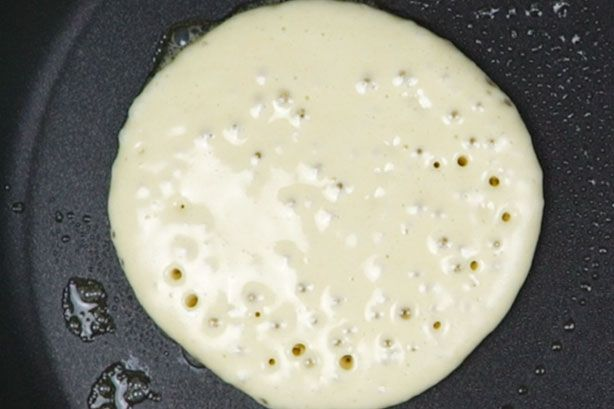
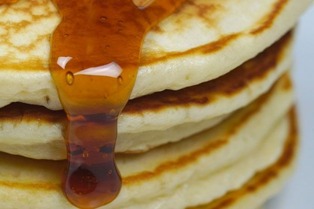

Pancakes Recipe

Description
This is our flippin' fantastic, famous pancake recipe from taste member, 'bdittmann88', who submitted the recipe over a decade ago. Since then, it’s become one of our most popular recipes of all time with so many of our reviewers declaring it “the best pancake recipe they’ve ever had.”
Ingredients
- 2 eggs
- 1 3/4 cup milk
- 1 tsp vanilla essence
- 2 cups self raising flour
- 1/3 cup caster sugar
- Butter for frying plus extra to serve
- Maple syrup to serve
Steps
- Whisk eggs, milk and vanilla together in a jug. Sift flour into a large bowl. Stir in sugar. Make a well in the centre. Add milk mixture. Whisk until just combined.

- Heat a large non-stick frying pan over medium heat. Grease pan with butter or spray with cooking oil. Using 1/4 cup mixture per pancake, cook 2 pancakes for 2 minutes or until bubbles appear on surface. Turn and cook for a further 1-2 minutes or until cooked through. Transfer to a plate. Cover loosely with foil to keep warm. Repeat with remaining mixture, greasing pan with butter or cooking oil between batches.

- Serve with maple syrup and extra butter.

Did you enjoy this recipe? Check out our others, or return home